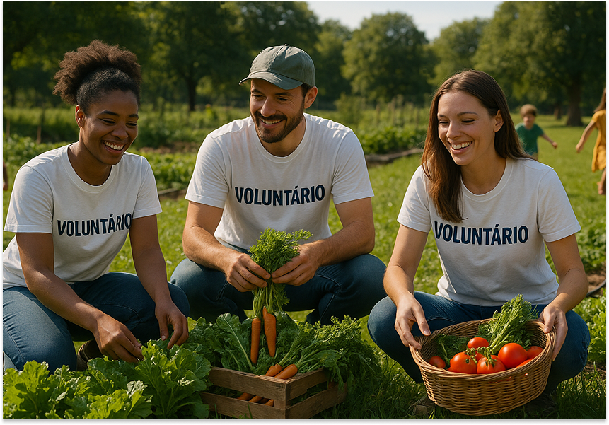
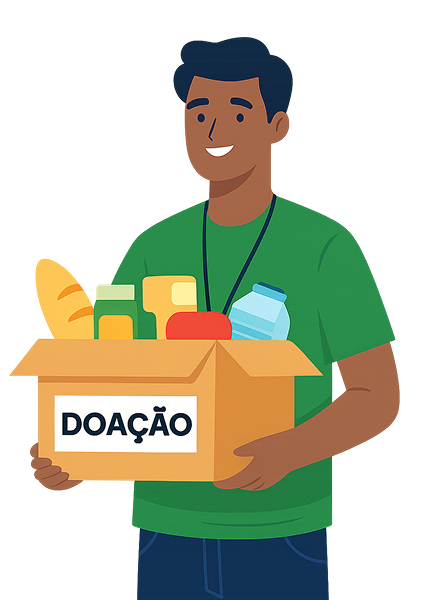
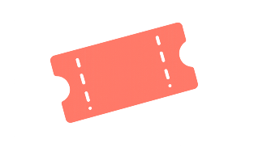
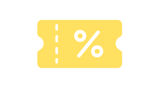

Gera impacto real
Você ajuda diretamente famílias em situação de vulnerabilidade alimentar.
No Mesa Solidária, você escolhe quando ajudar, participa de uma rede confiável e acompanha seus resultados com transparência.

Você ajuda a transportar doações entre doadores, pontos de coleta e famílias beneficiárias, fortalecendo uma rede que combate a fome e reduz desperdício.
Além das entregas, o voluntário também pode fazer doações próprias quando desejar, somando ainda mais impacto.

Um papel essencial para ligar doadores, famílias e pontos de coleta com segurança e agilidade.
Você ajuda diretamente famílias em situação de vulnerabilidade alimentar.
Conecte-se com doadores, empresas parceiras e outros voluntários.
Você escolhe quando, como e onde quer ajudar.
Um processo simples, com foco em confiança e segurança para voluntários, doadores, famílias e pontos de coleta.
Preencha nome, endereço e dados básicos.
RG, comprovante de endereço e antecedentes para segurança.
Regras de conduta, higiene e segurança em poucos minutos.
Veja entregas disponíveis e pontos de coleta com doações.
Reconhecimento real para quem fortalece a rede com doadores e pontos de coleta.

Troque seus pontos por ingressos culturais, musicais e esportivos.

Descontos em mercados, restaurantes, farmácias e lojas parceiras.

Receba horas validadas com certificado digital.
Ganhe medalhas digitais e suba no ranking de impacto.

Veja quantas famílias você ajudou e quantos kg entregou.
Junte-se à rede e fortaleça a conexão com doadores e pontos de coleta.
Quero ser voluntário